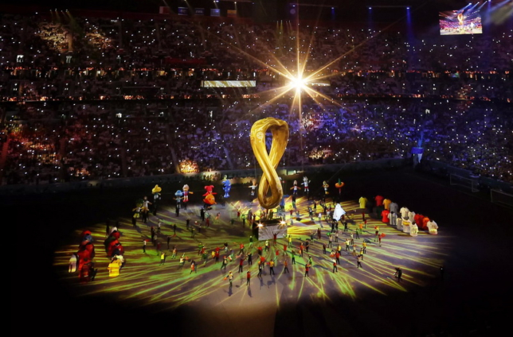

Huyền ảo lễ khai mạc World Cup
21/11/2022 - SPORT
Cuối cùng thì ngày hội bóng đá lớn nhất hành tinh, kỳ World Cup độc nhất vô nhị, cũng bắt đầu, mở màn bằng bữa tiệc của ánh sáng, âm nhạc và nghệ thuật trình diễn đặc sắc tại Al Bayt.
Tối 20/11, người Qatar đã làm được điều mà họ khao khát: trở thành tâm điểm của thế giới. Trong 30 phút, cả thế giới như ngừng lại. Tất cả cùng hướng về Al Khor, vùng duyên hải phía đông bắc Qatar, nơi “chiếc lều du mục khổng lồ” mang tên Al Bayt khai màn bữa tiệc bóng đá lớn nhất hành tinh.
100 ngày trước khi World Cup 2022 khởi tranh, chủ nhà Qatar đột ngột đẩy sớm ngày khai mạc, bất chấp sự thay đổi ảnh hưởng không nhỏ tới các hoạt động quảng bá và tiếp thị. Họ muốn tạo nên một buổi lễ thực sự hoành tráng, xứng tầm với kỳ World Cup xa hoa chưa từng có. Và nước chủ nhà đã giữ lời hứa.
Lễ khai mạc World Cup 2022 bắt đầu bằng câu chuyện được kể bởi diễn viên gạo cội Morgan Freeman, về hành trình phát triển của Qatar, sự vươn lên, chiến thắng nghịch cảnh thông qua cuộc đối thoại với Ghanim Al Muftah, YouTuber khuyết tật người Qatar, cuối cùng là thông điệp “chúng ta đang sống trong cái lều mang tên trái đất” và “World Cup chào đón cả thế giới”.
Trong ánh sáng, âm nhạc, nghệ thuật trình diễn, tất cả tạo nên một không gian lung linh huyền ảo ở Al Bayt. Và khi các bài hát, linh vật trước đây của World Cup lần lượt xuất hiện, sau đó là giai điệu Dreamers được cất lên bởi ngôi sao K-Pop Jungkook, hát chính của ban nhạc BTS và ca sĩ người Qatar Fahad Al-Kubaisi, đó là sự nhấn mạnh một lần nữa về sức mạnh kết nối, hòa nhập mà bóng đá mang lại, cũng như nỗ lực của chủ nhà Qatar, như Quốc vương Tamim bin Hamad Al Thani tuyên bố, rằng “không có khoảng cách giữa các sắc tộc, tôn giáo, những xung đột cũng khép lại, nhường chỗ cho bóng đá”.
Linh vật La'eeb chính thức cất cánh ở Al Bayt, và ngày hội bắt đầu, mở ra 29 ngày cuồng nhiệt với trái bóng Al Rihla.